Overview
Introduction
India Post is one of the most well connected services in the country with 1,55,000 post offices across India. There is at least one Post Office in each Zone of the city. India Post not only targets mail services but also offers banking and insurance.
Problem
India Post uses traditional means of mail service and functioning which is different from other mail services which can make the working of it slower or less efficient than the other services. Another significant problem that India Post has to deal with is lack of awareness in citizens regarding services India Post offers, or also lack of proper information regarding what information to put in to process certain functions of the India post.
Solution
QR-Enabled Postal assistance that would help in automation of Pincode to avoid errors and also
help in discovering India Post services and navigate to the place they are looking for.
The concept is to set up QR codes in the postal office to:
- Act as a way-finding system to help in navigation
- To avoid input of wrong information
- To be of service for creating awareness regarding the services offered with qr technology for faster registration for services
- Its would be a self-service system to calculate postage and pay seamlessly
- AI powered chatbot to help customers
My Role
UX Designer, UX Researcher
Timeline
Nov.2019 - Jan.2020
Team Members
Tanya Bansal, Namrata
Tools
Figma, Miro, Lucid Chart, Excel
Design Outcome
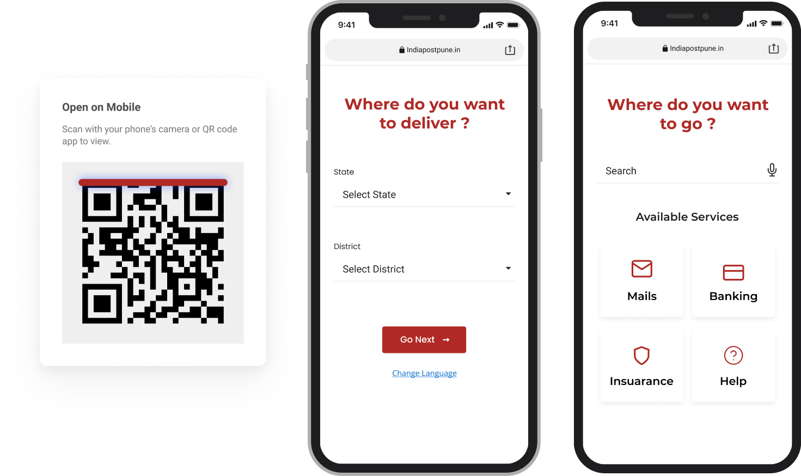
Research
Methods Used
Contextual Enquiry: Contextual inquiry is a semi-structured interview method to obtain information about the context of use, where users are first asked a set of standard questions and then observed and questioned while they work in their own environments. The Contextual enquiry consists of 5 models:
- Flow model
- Sequence model
- Cultural model
- Physical model
- Artifacts model
Questionnaire : A questionnaire is a research instrument consisting of a series of questions for the purpose of gathering information from respondents. Questionnaires can be thought of as a kind of written interview. They can be carried out face to face, by telephone, computer or post.
HTA: Hierarchical task analysis (HTA) is a widely used type of Task analysis where a high-level task is decomposed into a hierarchy of subtasks.
Competitive Analysis:Competitive analysis is basically a method to determine how well your competitors are performing. Using competitive analysis, you can make decisions based on knowledge of what is currently working well for your users, rather than based on guesses or intuition.
Personas: A persona is a representation of a fictitious user that includes a concise summary of characteristics of the user, their experience, goals and tasks, pain points, and environmental conditions.
FLOW MODEL- USER'S PERSPECTIVE
Insights
- People are not aware of the schemes offered by india post
- People enter wrong details i.e. address thus causing delay and inconvenience
- Have to visit post office number number times for the same purpose
- There are long waiting lines and working employees take inapt breaks at odd hours.
CULTURAL MODEL
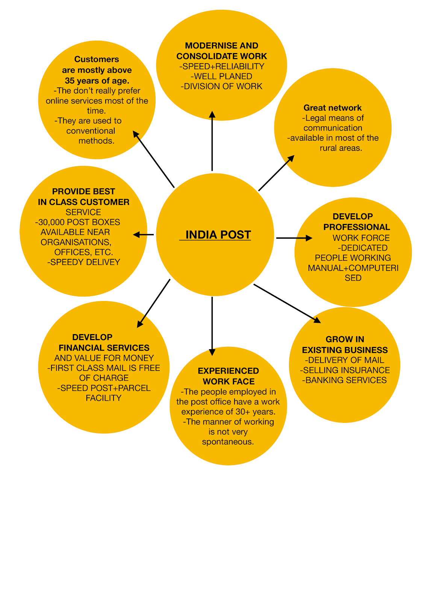Insights
- The diagram shows that the post office has a wide network thus making it very approachable for everyone including the rural people.
- Majority of people working in the post office have an experience of more than 30 years making it slow and rigid.
- They have service of first class mail which is free of cost and is for everyone and can be accessed at any nearby post box.
- They are expanding from postal services to banking services thus making it better each day- a one stop place for all.
SEQUENCE DIAGRAM- CUSTOMERS
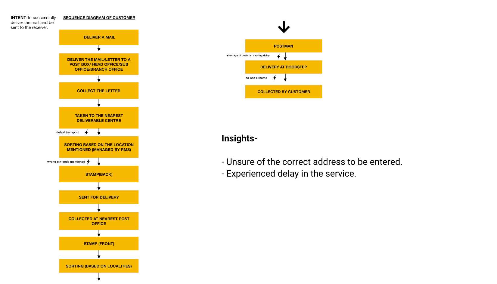
SEQUENCE DIAGRAM- SENIOR POST MASTER
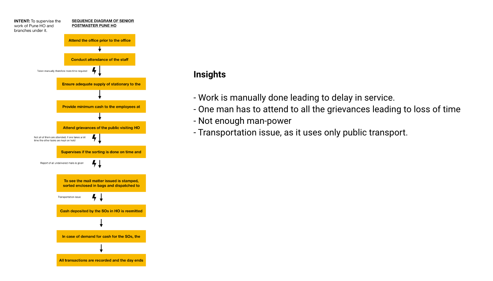Fig 3: Showing the sequence model of the mail delivery
PHYSICAL DIAGRAM:
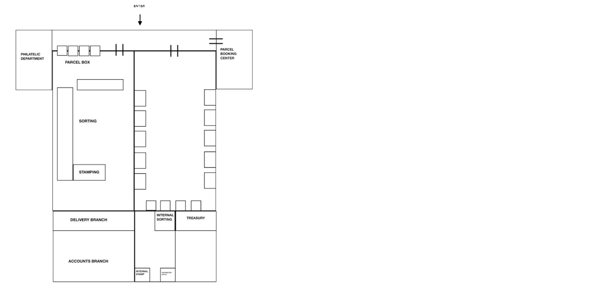Fig 5: Showing the Physical model of the Pune GPO/HO
ARTIFACTS MODEL:
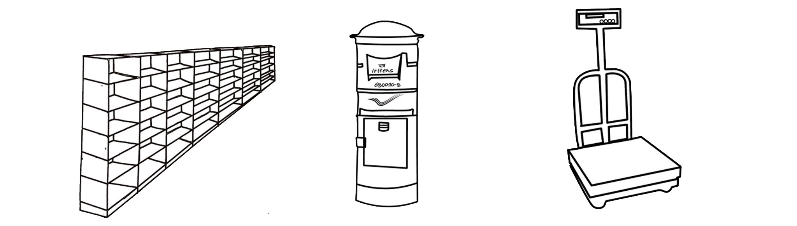Questionnaire:
For this method we made forms for both the employees and customers where we asked them similar questions to get clarity about the problem area and where they face most problems.
Insights:
Employees:
- The majority of the employees belonged to the age group of 50-60 , after that the second majority of the age group belonged to the age group 30-40.
- Employees worked the most as postal assistant, later postman and then in scanning and sorting hub.
- For the majority of employees there is a delay caused in their activities due to reasons like system failure, computer system and manpower, internet issues, Problems in transmission and shortage of manpower, Power cuts or break or Difficulty through new transactions.
- With respect to customers, the problem faced is- Pin code and insufficient address
- The main problems the employees faced due to the customers were them entering in wrong information such as wrong pincode of the area this in general makes it difficult for the employees as they have to spend more time correcting the information and either resending it back to the customer. This in general acts as an obstacle and makes the process a bit slower.
- According to the employees opinion the things that can prevent it from happening are; increasing people's awareness about this kind of information, increasing manpower and educating people regarding city name and proper address.
Customers:
- The majority of people who visited post offices aged more than 35+ , showing that post offices are used mainly by aged people.
- The majority of people who uses post office visits it very often, as work in post offices requires frequent visit.
- Majority of people visit post offices 3 times a month for the same purpose.
- The people who visit the post office rarely use it for postal service.
- The majority of people haven't faced any inconvenience while using India post
- The majority of people don't know the process of postal services like who to approach and where to go, also if there is availability of online services.
- The majority of people who visit India post doesn't have an account in its bank, thus showing that the majority of people are not aware of banking services provided by India post.
HTA:
The following HTA shows the in general working of the Post Office for the task of delivering mail. The HTA shows the step by step process of delivering mail and specifications of the process to understand the problems in the process as well. The main area or plan which requires the most number of steps would be when the customers enter wrong information and the steps which are taken after that.
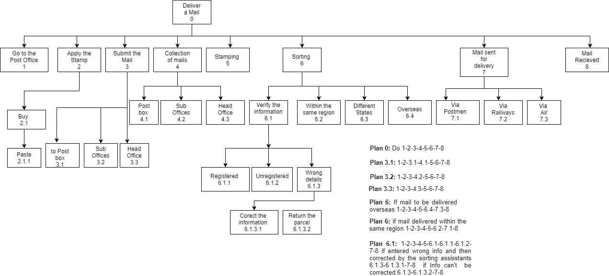Personas
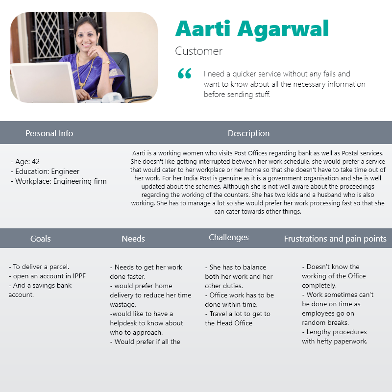
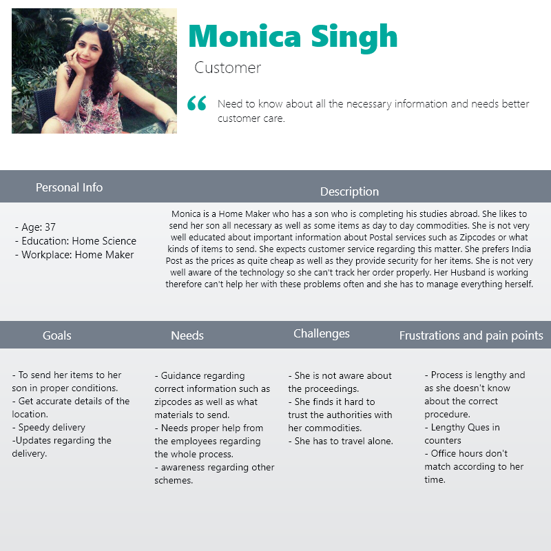
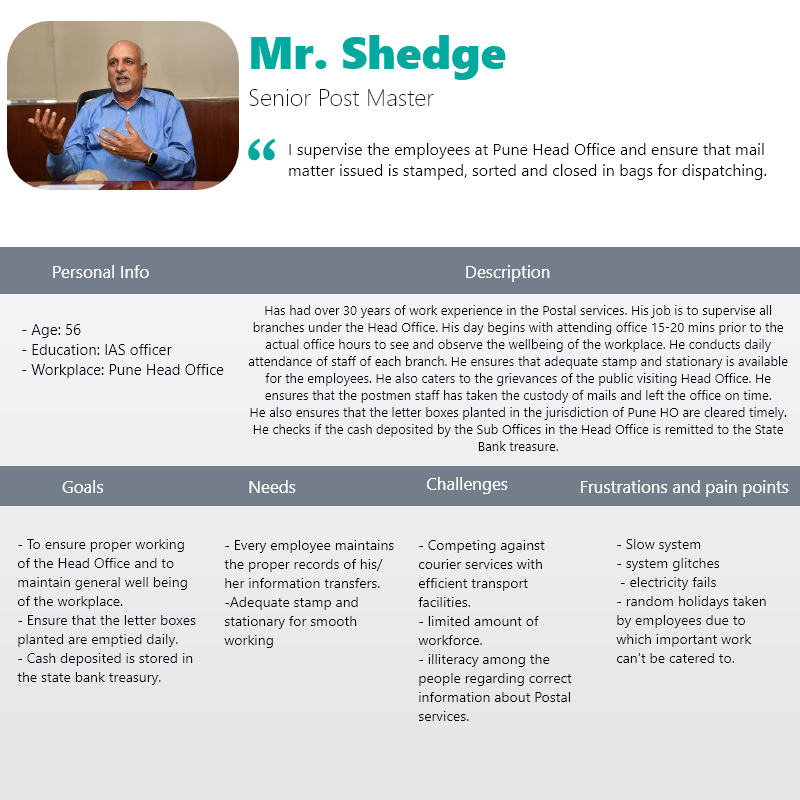
Insights
Mr Shedge, Senior Post Master:
Mr Shedge supervises the Pune Head Office and ensures all duties are carried on by the
employees efficiently. His frustrations and pain points were slow working of the system due to which some duties cannot be
fulfilled in time, another problem is power cuts, electricity failures and random holidays taken by employees which results in
inefficient working.
Aarti Agarwal: Mrs Aarti visits post offices regularly regarding banks as well as postal services but doesn't like getting
interrupted during her work schedule. The main problems that she faced were that she didn't know the working of post offices in
general, her work can't be done on time due to the often irregularity of the working hours of the employees for example they
taking random breaks, lengthy procedures with hefty paperwork.
Monica Singh,Customer: Monica is a homemaker who has a son studying abroad so she has to visit post offices frequently in
order to send her parcels. The main frustrations she faces throughout the process are, She doesn't know about the correct
procedure or what kinds of commodities she can send, lengthy queues at the counters and inconvenient unmatching office
hours.
Patil,Postal assistant:Shantaram Patil has approximately 30 years of work experience in Pune HO. His main job is
sorting letters according to their locations and also correcting the letters with their correct addresses. The repetitive process gets
very monotonous and irritating, he is also irritated by the lack of information given by the customers
Competitive Analysis:
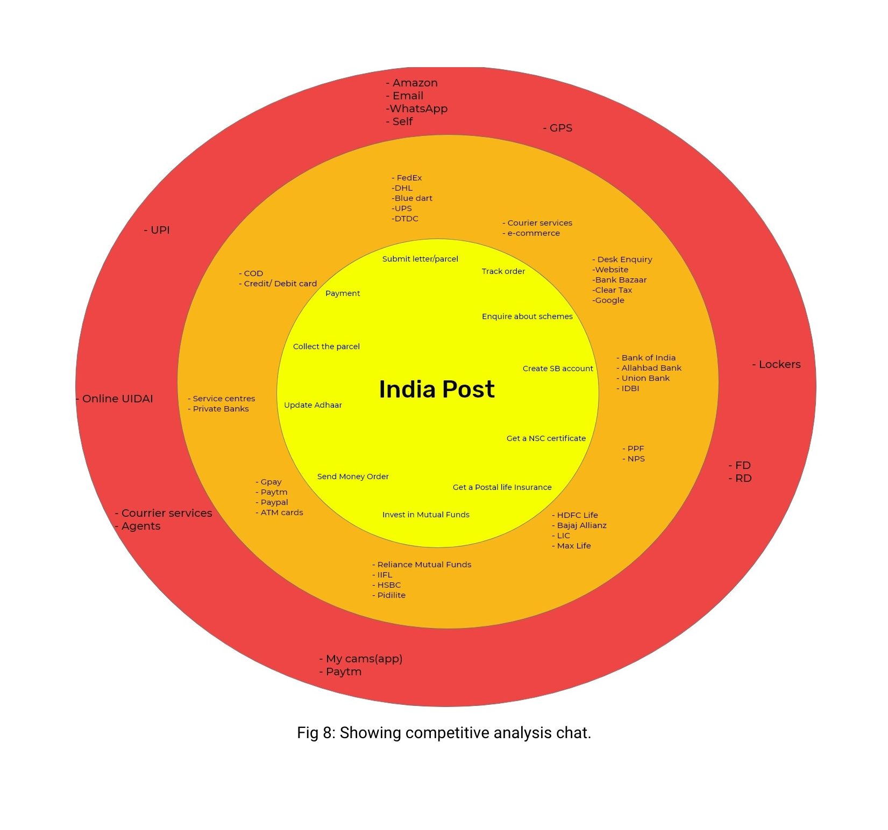 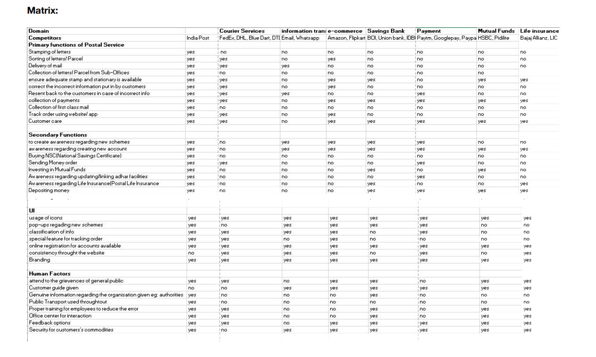
Insights:
- Has to compete with both mail services as well as banking services.
- Mail service is becoming obsolete due to the advent of e-mail.
- People feel safe using online services for money transactions
- People have less faith in the services offered by india post
- Private sectors are taking advantage of the drawbacks of India post
- India post offers a wide range of services of which people are not aware.
Main Problems:
From the insights the main problems identified were:
- Customers lack of knowledge regarding input of correct information on the parcels/mails/other commodities.
- Customers unaware of the new schemes of the banking sector of India Post.
- Lack of knowledge in customers regarding the correct type of commodities to send.
- Not enough manpower to cater to all needs of the customers efficiently
- All employees can't cater to all need of the customers simultaneously resulting in frustration among the customers Issues in servers leading to delay.
Design
The design is of a QR Enabled postal assistance, which makes the task of post office navigation easier and also helps the employees of Post Office by avoiding entering of wrong information.
Features:
- Automating Pin Code entering system- As it was identified the people entered wrong information leading to problems later. Automating this step by printing the pincode and then pasting would avoid the problem.
- Where to go - Qr code powered wayfinding system to help user reach the right counter without any confusion
- Services -This menu consists of all the services that the post office offers, including mail, banking and insurance and to make the registering process more effortless this system is also powered by QR technology so that users reach the required page without having to search.
- Calculate postage and Online payment -the users can calculate the postage and pay the required amout online thus making the whole thing even faster.
- Help - Track and trace -This feature is helpful as the users can track their parcel before placing a complaint.
- Help - Chatbox -AI powered chatbot that helps users regarding their queries or submitting complaints.